Building Science Jubilee Tools
All tools which are supported in science-jubilee are documented here. For existing tools, we link to documentation on the Jubilee project page and provide additional information where necessary. Here, we describe tool prerequisites, the current gallery of tools, how to design a custom tool, and how to calibrate a tool.
Note
Adding a brand-new tool — hardware plus its science-jubilee plugin — is covered end-to-end in Design a new tool.
Tool Prerequisites
Parking Post
Jubilee tools are parked on the rear rail of the machine. To hold the tool when it’s not in use, any tool will need a parking post. Several sizes already exist to accommodate tools of varying widths.
{kind=link}
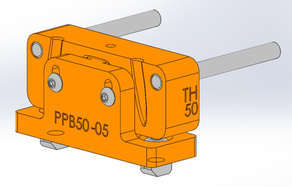
Diagram of a Jubilee parking post.
Tool Wings
Each tool needs a way to rest on top of the pins of the parking post above. While this is sometimes accomplished in different ways depending on the tool design, a common way is to use tool ‘wings’, which slide into the parking post pins.
{kind=link}
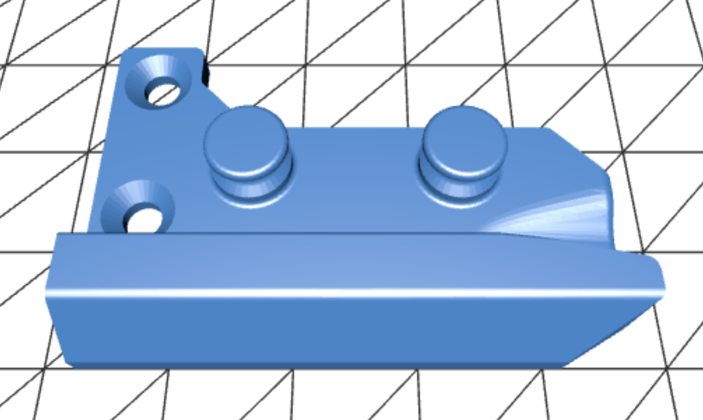
Jubilee tool wing
See the video below to get an idea of how the tool wing works:
Tool Plate
Each tool has a tool plate which couples with Jubilee’s toolchanger to be able to be picked up. This tool plate can be 3D printed + laser cut, or you can purchase aluminum toolplates (e.g., Luke’s Laboratory fully assembled tool plate).
{kind=link}
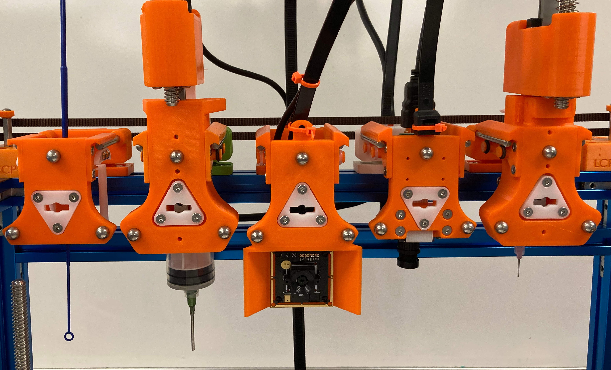
Shown are a set of tools parked on a Jubilee; seen on the side of each tool frame are a set of tool wings resting on an accompanying parking post. The tool plates of each tool are visible; note the three threaded steel balls on each which will couple with toolchanger on pickup, and the white wedge plate (made of delrin) in the center.
Fabricating a Tool
To fabricate any tool, you’ll need access to:
a 3D printer, to print parking posts, tool wings, and tool frames;
a soldering iron, for heat-press inserts;
a set of hex keys, to tighten up screws.
If you plan on making new tools regularly, it might also be useful to stock up on the following materials:
Jubilee wedge plates, which can be purchased here;
M3 & M5 screws;
M3 heat set inserts;
O-rings (for use on the tool wings);
Metal pins (for the parking post).
Cable Management
Many tools have wires that control tool components like motors and cameras. To keep wires out of the way, you can use large zip ties which extend from the Jubilee electronics panel to the tool itself, and zip tie the cables to the large zip tie to hold the wires out of the way. There is also a 3D printable cable management bracket which can be attached to the back of the rear Jubilee rail to hold cables.
Tool Gallery
Pipette Tool
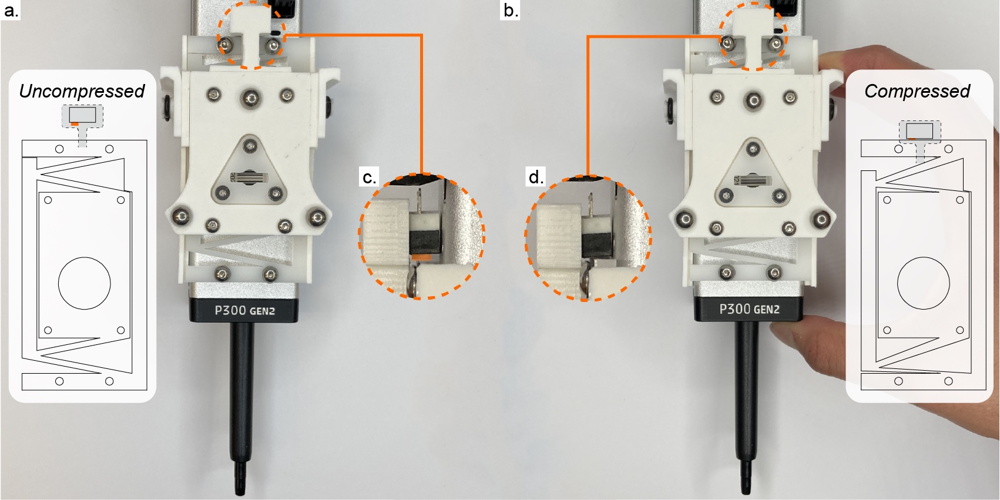
To use an OpenTrons Pipette with Jubilee
Inoculation Loop Tool
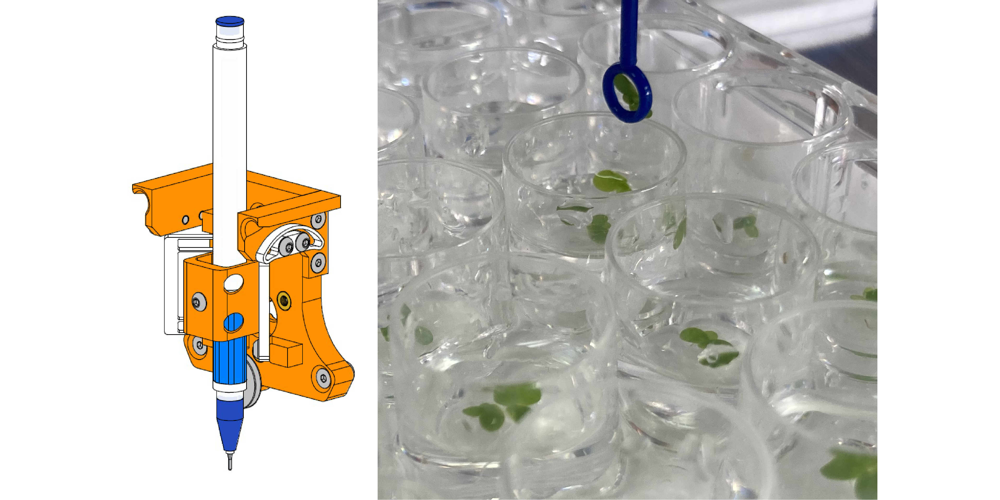
To hold inoculation loops, pens, or other probes.
Top-Down Camera Tool
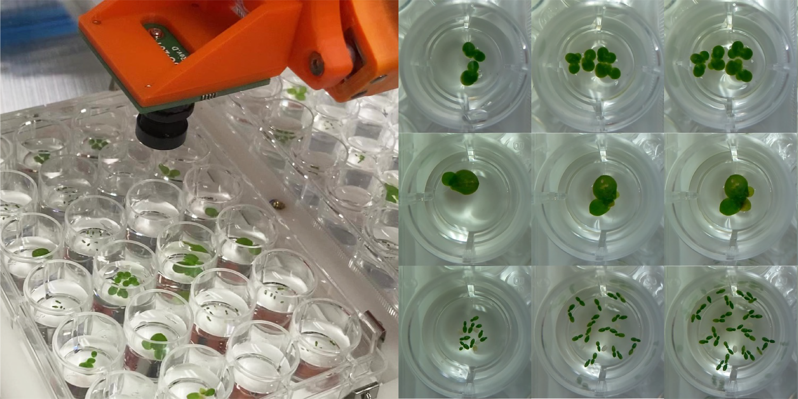
To hold a Raspberry Pi camera for imaging the deck.
Side Camera Tool
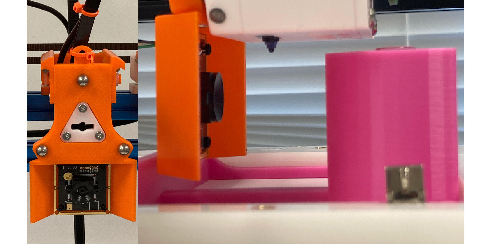
To hold a Raspberry Pi camera to image parallel to the deck.
Syringe Tool
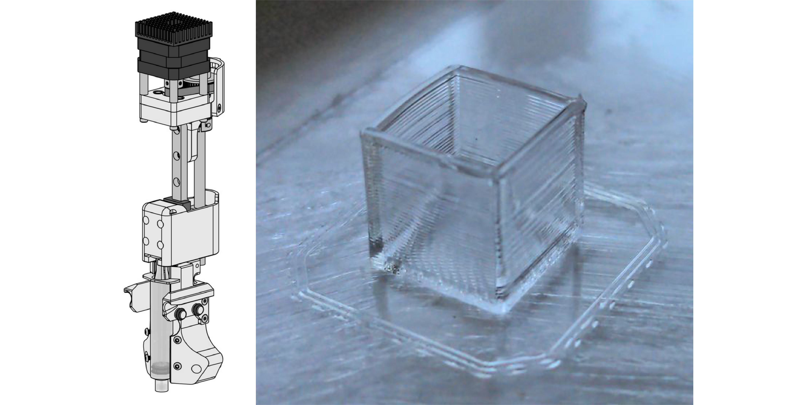
To hold a 10cc or 50cc syringe.
Lab Automation Deck
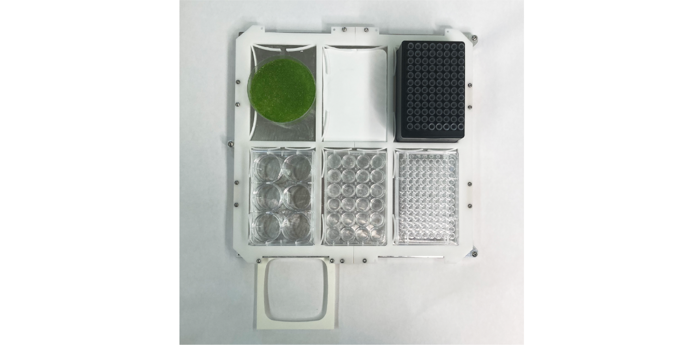
Deck attachment to hold 6 standard microplates + disposal containers.
Designing Custom Tools
The shortcut to 3D modeling a tool with the right placements is to simply build on top of the CAD files in the template folder.
{kind=link}
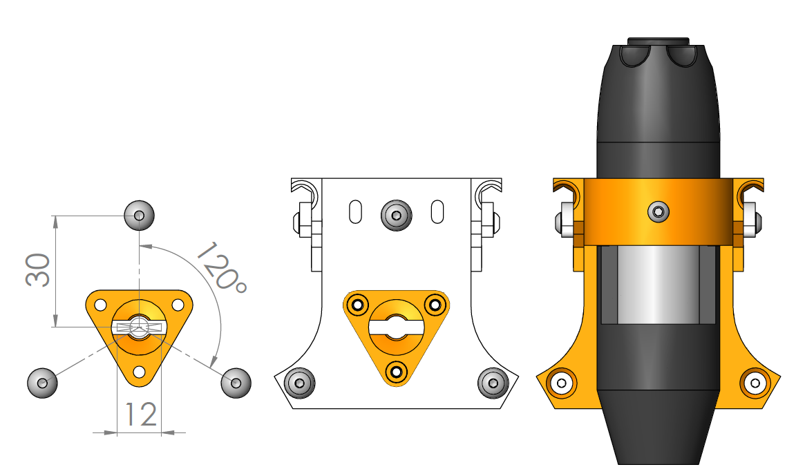
Tool template showing dimensions of wedge plate and tool balls (left), an assembled tool plate with tool wings (middle), and a complete USB microscope tool (right).
Starting from scratch is also straightforward. To create a custom tool that locks into Jubilee’s carriage, you must place the tool balls and the wedge plate in a specific location, specified in the Tool Template Reference Dimensions, copied below.
{kind=link}
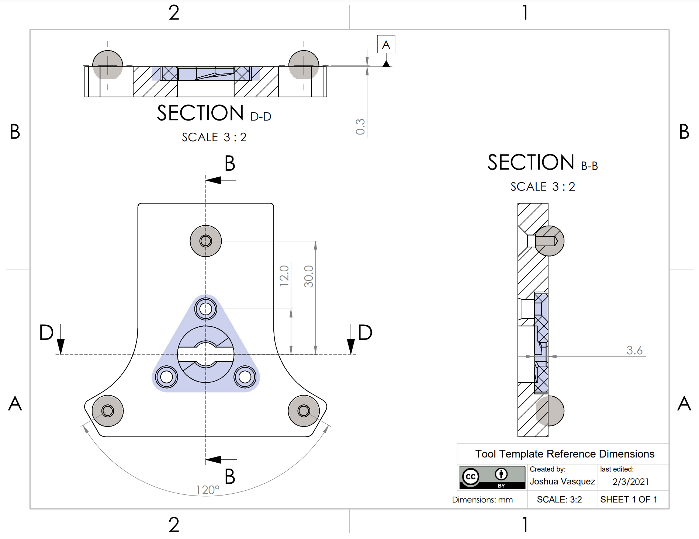
There are a few size constraints that may influence your tool’s shape (see below). A number of example tools are shown in the Tool Interface Diagram PDF. Note that many of these constraints are soft. Using longer dowel pins on the parking post will allow for deeper tools. Also, moving the tool’s active center past the leftmost line will result in a working tool that simply has a bit less Y-axis travel.
{kind=link}
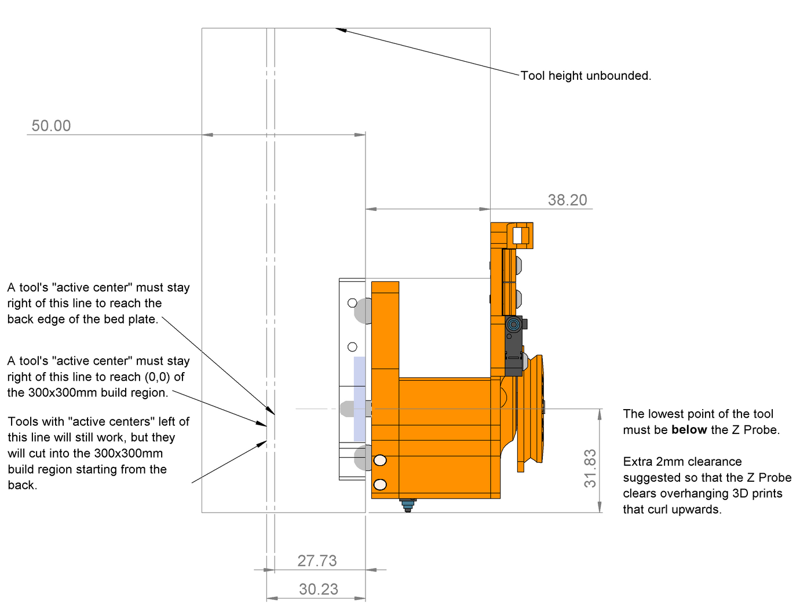
Tool interference and constraints diagram
Tool Postrequisites
Once you’ve built a tool, it needs to be calibrated for use on the machine. See here for guides and help on the tool calibration process.